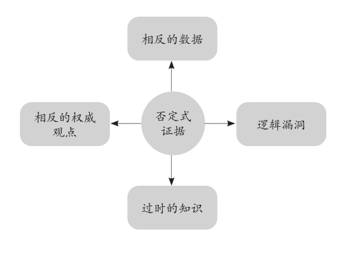
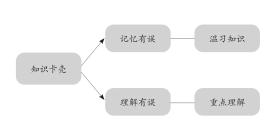
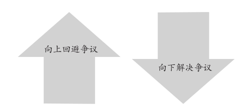
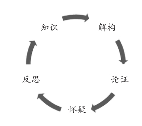
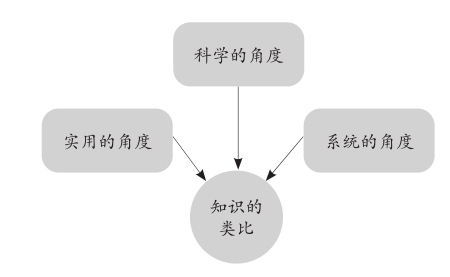

第十七章
寻找反证
我们在对学习的成果进行回顾和反思时，“寻找反证”是学习过程中的一个不可缺少的环节。即：我学到的概念是否科学？我学到的理论是否实用？我学到的观点是否正确？我学到的论证是否严谨？以上内容能否从其他地方找到相反的“证据”推翻它们？
寻找反证的过程就是有目的地反思。反思不同于回顾和总结。因为回顾和总结是对学习的结果进行温习与提炼，对学习的效果进行评估，反思则是对学习的质量进行解构，保证自己学到的是正确的知识。
第一，反思能够帮助我们发现知识本身存在的误区。
第一个作用很好理解，我所有的学生都能提到通过必要和及时的反思在学习中可以发现一些论证不严谨的知识和自己理解有误之处。读完一本书，学到一门知识或技能后，不要着急去实践和应用，先对所学的内容从头梳理一遍，进行对比验证，或者寻找相反的证据，看能否推翻这些知识。一旦发现与事实存在出入，就能以此为突破口，加深对正确知识的理解。
我们日常中很多的决定是依靠大脑的直觉做出来的，学习时也时常地依靠于习惯，即基于我们平时累积的经验或本能反应。但是，没有任何经验是完全可靠的。所以对知识进行反思，从不同的角度反复推敲，也是在反思我们平常积累的经验和过去的知识体系是否存在误区，然后在学习的过程中弥补这些缺口。
第二，反思能促进我们在已有知识的基础上产生新的知识。
例如，在培训课上你学习了提高工作效能的知识，专家图文并茂地教给你十种习惯和五种思维模式，和你向来遵循的习惯与思考的方式不同，这就产生了新的知识。怎样让这些新的知识经得起事实的验证，进而帮助到你的工作呢？就要一边每天努力地践行，一边琢磨这些方法在实践中是否有效。拥有了深度反思的能力，便能够每天把新的要求和自己的行为进行对比，逐步地改进和成长。如果不懂得深度反思，大概率学了就忘，即使讲给别人听时头头是道，你也很难把它们应用到自己的身上。对于后者，我们可称之为“口头上的进步”——
谈起一件事时出口成章，信息丰富，见识很高，一听就是很有水平的人。人们在和他的交谈中受益匪浅，对他很尊敬。但亲自动手做起来时，他往往表现得一塌糊涂，让人大跌眼镜。
所以真正的反思必须结合行动，要在学以致用的环节实现对知识的检查，督促我们去将经得起事实检验的知识运用起来，转化为我们的思维成果，内化为我们的实际能力。在反思时，可以通过联想，将生活中其他的经验、经历与知识相联结，发现它们的关系，重新认识和审视自己过去的表现，这就能够把自己已有的知识重新组织，产生新的知识。
正像费曼在加州大学的一次演讲中说的：“人和人之间的知识差距不是来自学习的资历、年龄甚至也并非源于做实验的次数，而是取决于对知识的反思、总结和升华的能力。”在学习中若能持续地反思，将给我们带来强大的竞争力。它能在极短的时间内使我们更透彻地理解和更准确地掌握学习的对象。
重视否定式证据

第一，相反的数据。
这里的数据不是由带有某种倾向性的个人有意识地统计出来的信息，而是公认或者科学的实验数据，比如数十年来被证明行之有效的计算公式、权威部门的调查数据或者科学家团队的研究报告。这一类的数据经常具有无可置疑的凌驾性。
第二，逻辑漏洞。
如果知识本身的逻辑存在问题，从其应用或输出中我们就能明显地发现这一点。像经济、管理或物理知识，一个严谨的逻辑常起到根本性的作用。比如，当从一些人口中听到“世界经济崩溃论”的理论时，我们很容易就能找出其中的逻辑漏洞，因为至少东亚或者说中国经济的整体局面是优良的。
第三，过时的知识。
“对的知识”也未必是“有用的知识”。我们平时接触到的很多信息其实都是过时的，描述的是过去一段时期内的现象、规律或数据，虽然很准确，但已经不适用于今天。比如20年前的企业管理方法、财务知识、金融规律等，放到那时是对的，能派上大用场，但放到现在却并不符合事实，也起不到效果。所以一定要跟上时代的发展，优先学习最新的知识。
第四，相反的权威观点。
我们从专家那里学到了一个理论，别因他的名声、地位就毫不犹豫地接受，要先看看有没有其他的专家、权威人士的观点与之相反，或对他的思路提出过质疑。这个世界没人是100%正确和不可否定的。如果有不同的声音，我们就要认真地研读和分析，看看这种质疑是否有力，逻辑是否站得住脚。假如能找到许多这种反证，我们在学习他的理论时便要格外谨慎。
重视知识的“否定式证据”，即要求我们为学习搜集一切的“必备要素”，不能仅有正面信息，还要有充分的负面信息。如此才能避免学习时对知识的倾向性。我们在学习时总是会被特定的倾向性所困扰，要做出客观的结论，就必须勇敢地打破这种倾向性，不能盲目地相信一种知识，不能迷信单一的知识来源。
最近几年来，我对“学习的能力”这个范畴进行了细致的研究和认真的思考，收集了数十万份世界各国不同阶层、高校和行业的资料，也深入了解了费曼先生的教学思想和在学习方面的观点。我发现人和人在学习中最大的差别从来不是优胜者拥有什么绝密而不可示人的成功秘诀和惊人的天赋，而是他们在学习时养成了一些与众不同的好习惯。他们既善于输出知识，也敢于质疑知识，反思自己的学习成果，不断地挖掘和精进，才完成了从量变到质变的飞跃，将平庸者远远地甩在了身后。
当知识卡壳：回到理解不清的地方，找出薄弱环节

对外输出知识时，我们很容易发生卡壳的“事故”，就像汽车在行驶途中突然出了故障。有时候这很尴尬，因为自己都没搞清楚，我们又怎么让别人听明白呢？这时，停下来，先梳理一遍卡壳的环节——到底是什么原因导致了自己的停顿和困惑？如果是记忆有误，有些关键内容突然记不起来了，便集中注意力重新温习一遍相关的内容，加强对这段知识的记忆；如果是理解有误，则要回到这段理解不清的地方，找出失误之处，重点理解，弥补薄弱的环节。
比如，英语单词lover在多数语境中均指向“情人”而非“爱人”，busboy其实指的是“餐厅服务人员”而不是“汽车售票员”。初学英语的人十分容易犯下理解的错误，遇到含有这些单词的句式，翻译出来就完全变了味道。这是我们的学习中很常见的例子。
另一种情况是，一些理论或概念较为晦涩难懂，理解起来有困难，我们也极易卡壳。比如，我第一次接触到美国证券分析家拉尔夫·纳尔逊·艾略特（R.N.Elliott）的波浪理论时，艾略特以波浪的形态解释他“市场走势总是不断地重复同一种模式”的观点，并提出了五个上升浪和三个下跌浪的统计周期。一开始，我总是误以为这个理论的目的是为投资者总结一个可依据波浪走势选择买点和卖点的股价变动的规律，但每当要在实践中验证这个规律时，我就会发现有很多行不通的地方。
根据数据显示，大量的股票并未遵循一种有迹可循的波浪模式，甚至在很长的周期内（诸如十年和二十年）也看不到有任何波浪的形态。于是我又回到艾略特的书中重新理解这句话，结合他的其他论述与市场的实际情况进行对比。最终我意识到，艾略特使用波浪形态意图向人们表明的是，市场无论走出什么形态，都可以用一种基本的量化模型去做分析，即市场分析理论。学习他的理论，重要的不是找到一把钥匙，而是学会自己根据实际情况制作钥匙的本领。
这是在学习任何知识时我们都要坚持的原则：将知识与现实相结合，使它能为己所用，解决当下的问题。
争议是深度学习的切入点

如图所示，不管学习还是日常生活，遇到争议性的问题，人们一般有两种处理方式：
第一，向上回避争议。
忽略或者绕过争议，只去理解自己第一时间能处理的问题。这是一种大部分人采取的“浅学习”模式（也许您正在采取这种模式阅读本书）。我们平时的阅读中碰到有歧义的知识点，大脑本能地会选择跳过去，它只喜欢接收那些直白易懂的信息。我们形容一个人看书很快时会用“一目十行”这个成语，这便是大脑采取了浅学习的模式在输入知识，对所学内容只能记个大概，也无法形成长时记忆。
第二，向下解决争议。
沉下来化解争议，从有争议的知识点中获得宝贵的智慧。这是费曼在他的教学生涯中向人们推荐的“深度学习”模式。比如向别人阐述一个概念时，对方不认同你的理解或该概念的观点，此时争议就出现了。最好的办法是与之以简洁而直接的方式探讨，双方畅所欲言，交换看法。这样做不但能解决争议，还能加深你对知识的理解。
善于学习的“老司机”最喜欢有争议。争议意味着智慧，也代表突破口。我们想深入地理解和掌握一门知识，除了记住核心的知识要素、逻辑和架构，还要重点关注那些存在争议与问题的内容。这些内容不仅代表着知识的难点和痛点，同时还起到了衔接其他知识、开启脑洞、激发我们持续性地系统化思考的作用。
费曼接受采访时举过一则例子，他曾经从《自然》杂志看到一篇论文，作者是天文学家卡尔·爱德华·萨根（Carl Eduard Sagan），萨根提到的地外无线电信号的证据引发了他浓厚的兴趣。所有人都知道萨根是搜寻地外生命的狂热支持者，对宇宙中存在众多文明坚信不疑。费曼读到了这一观点，但他认为相关的内容不足以写成一篇专业的论文。
“证据太苍白了，就好像一只苍蝇飞过婴儿的耳边，婴儿却以为那是一个高级玩具。假如外星文明是我们要找寻的‘玩具’，怎能凭借一点点可疑的声音就确信他们一定存在呢？想说服公众，他还需要更多的证据。”
为此，身为物理学家的费曼从康奈尔大学的同事那里获得了一些相关的资料，详细了解与地外文明有关的所有证据，并给美国天文协会和《自然》杂志写信表达自己的观点。他认为萨根在严肃的科学论文中加入了具有欺骗性的“滑稽的知识”，会诱导公众和其他科学家做出错误的判断。最终，费曼赢得了《自然》杂志的道歉，杂志向他承认这是一篇“未经严谨评估就予以发表”的文章。
解释这件事时，费曼说：“最好的学习是我们能从一个问题里找到新的问题，你不喜欢、不赞赏、不认可的东西，那才是知识这顶皇冠上的宝石。如果你憎恶争议，或者没有挑刺的习惯，就如同你扔掉了这颗宝石，只戴一顶漂亮但毫无价值的帽子。”
没有“最可靠”的结论

这是一个正确的逻辑闭环，告诉我们别相信任何一种学术结论，哪怕是最权威的声音，也不能奉为至宝或捧上神坛。在上面的循环结构中，知识是动态变化的，一方面我们不断地解构它，理解它，另一方面也通过论证、怀疑和反思更新它的内容，使知识保持常新，尽可能地真实而客观。
有个学生问我：“您觉得任何一种结论都不是最可靠的，包括我现在学的教材吗？”他拿出一本《高等数学》和《材料物理化学》，“这些也要怀疑地学？”他一脸不可思议。我说：“对，你当然应该记住上面的重点内容，理解它们，运用它们，但你要知道，所有的知识都有它的局限性。我们说一种知识是权威的，是说在当下的条件和环境中它是能解释和解决一些问题的，但未来呢？在其他未经论证的条件和环境中呢？我们谁都不知道。如果你学习时能拥有一种科学的怀疑精神，那么你不但能很好地掌握这些知识，还有机会去创造新的知识，成为一名优秀的具有突破思维的学习者。”
和已有的知识建立多角度的类比关系

第一，科学的角度。
科学的角度有两个含义，一是逻辑严谨，数据正确，观点合理；二是与其他信息和知识的对比中经得起最为苛刻的质疑，在放大镜下经得起百般的审视与筛查。很多人平时相信的一些所谓的生活和健康常识，比如维生素C预防感冒、素食者比肉食者健康等，就是不科学的知识。
第二，实用的角度。
知识的实用性就是能够落地，从书本上的枯燥的理论与文字转化为现实的具体的结果。我们不管去学什么知识，其最终的目的都是为了获得某种实用的价值，让知识对自己的生活、工作、情感乃至整个人生都有所帮助。哪怕是用来修身养性，这也是实用性的一种体现，就怕大费周章学完之后什么收获都没有，学习这种知识只会浪费我们的光阴。
第三，系统的角度。
从系统化的角度把新知识与我们既有的知识体系进行对比，建立内在的联系。费曼学习法中有一项必须遵守的原则就是，要用一种系统化思维对待学习，对待陌生的知识。当我们新理解了一个概念时，不要把它作为孤立的个体存入大脑，要将它看作自身知识系统的一部分，和旧的知识做对比，存优去劣，也要存新去旧，才能升级自己的知识水平。
在对所学的知识寻找反证的过程中，与自己已有的知识建立多角度的类比关系有助于我们发现自身的不足，还有新知识的问题，同时也能将新知识融入自身的知识体系中，把它们衔接成一体。这也是一个保留科学、实用和系统化知识的过程。